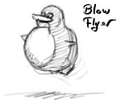
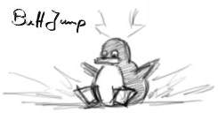
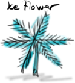
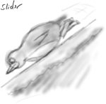
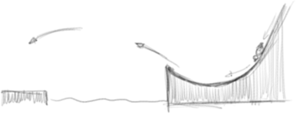
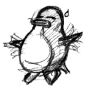
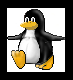
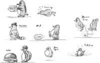
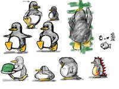

BlowFlyer
|  |
The BlowFlyer or BaloonTux action should be a temporary
limited action in which Tux fills his body with air (helium?!)
and is thus able to fly for a short time, ie as long as he can
go without breathing. The end of the flight should be
announced by Tux changing color and catching for air.
|
ButtJump
|  |
The ButtJump is a smash attack onto the ground, which
generates a small shockwave which affects all enemies in a
near radius. Reaction to the shockwave for enemies might be to
fall upside down or something similar. The ButtJump might also
be used to break special tiles in the ground. The ButtJump is
triggered by pressing and holding the down-key while in a
jump. The ButtJump can't be interruppted.
|
Ice Flower
|  |
The IceFlower could be one of the extra that Tux can collect
it might be able to resize him to SuperTux or give him other
special abbilities.
|
Slider
|  |
Tux will be able to make use of smooth terrain my using the
slide action. By using the slider action Tux will jump on its
belly and thus slide speedy down the hill. Terrain that is
formed like a ramp should allow him to make huge jumps, which
would be impossible without the slide action. While sliding
downhill Tux shall be invulnerable by normal enemies, howewer
special enemies with spikes or so, might still be able to stop
him.
Exact details on how the sliding will work have to
be worked out, but it might get a rather central role in
gameplay.
|

Flapping
|  |
Once in air Tux should be allowed to flap with his wings. They
are not enough to let him fly, but should allow him to get
some additional air-time (like a small double-jump).
|
Soap
Tux migth be able to eat some soap and thus be able to spit
out bobbles, bubbles them self should be useable as steps to
reach higher places and might be able to caputer enemies.
Rope
Tux will be able to use a rope (in one form or another). The
rope should be usefull for both swinging around and for
capturing or disableing enemies.
Running
|  |
SuperTux might be able to run, running will enable higher and
wider jumps and other things that require some kind of
'boost'. If running will be automatically or require the press
of a 'run' button, hasn't been decided and might depend on how
the rope is used
|
Unsorted


{kind=link}
{kind=link}